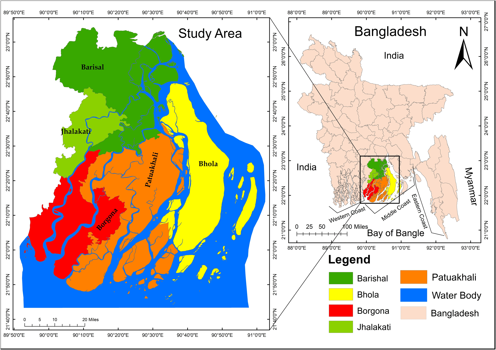
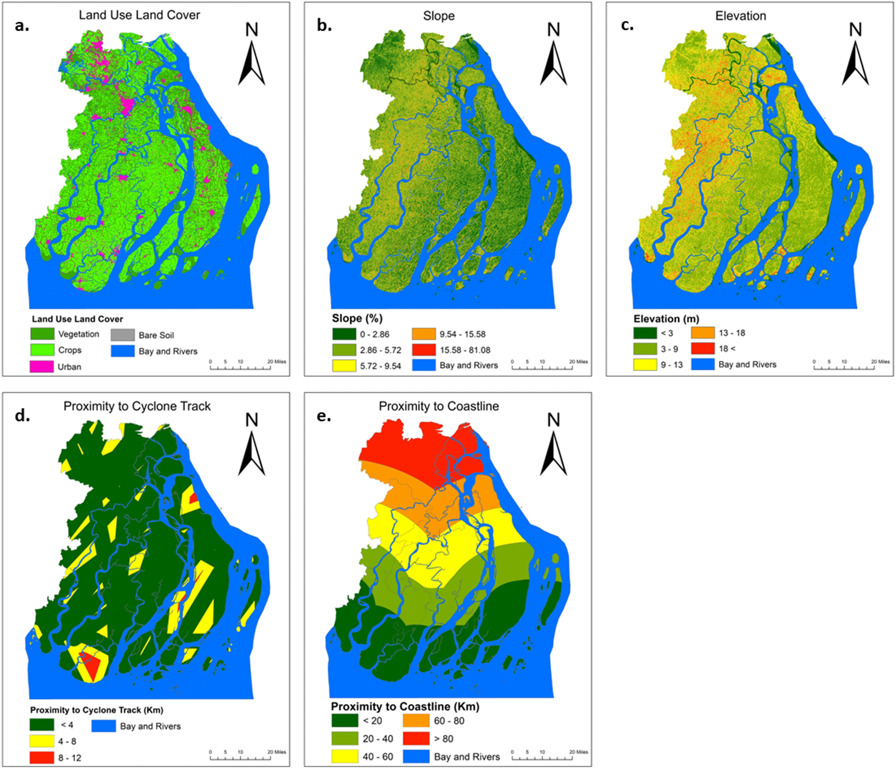
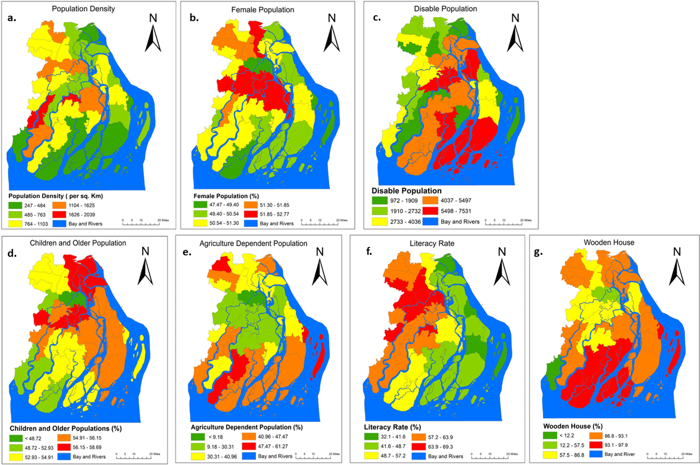
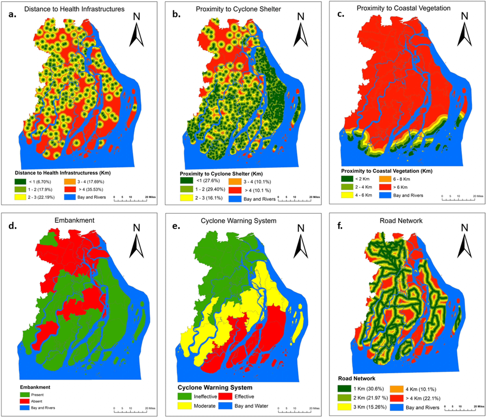
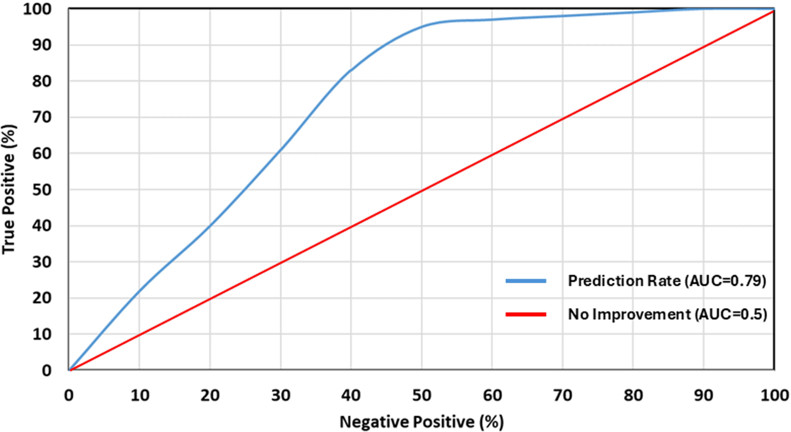

Introduction
Bangladesh’s low-lying coast is exposed to tropical cyclones, storm surges, intense rainfall, and damaging winds. Climate change and sea-level rise increase pressure on communities already living with significant hazard.
This study assesses cyclone vulnerability along the central coast by combining physical conditions, social characteristics, and mitigation capacity with a fuzzy analytic hierarchy process (FAHP) and geospatial analysis. The mapped results help compare vulnerability and identify areas where preparedness and resilience investment may be most needed.
Study Area
The study covers 46 Upazilas in five districts: Barishal, Bhola, Patuakhali, Barguna, and Jhalokathi. It lies within the Ganges–Brahmaputra–Meghna delta, shaped by distributary rivers, tidal channels, low relief, and coastal landforms.
Agriculture and fishing are important livelihoods. Housing quality, roads, services, and shelter access vary across the region and affect how communities can prepare for and respond to a cyclone.

Significance
Cyclone risk is shaped by more than physical exposure. Social sensitivity and access to shelters, healthcare, roads, and warning systems also influence impacts. Combining these dimensions provides a comparative basis for directing preparedness measures to local needs.
Objectives
- Map physical, social, and mitigation-capacity factors related to cyclone vulnerability.
- Classify factors into five vulnerability levels.
- Apply FAHP weights and GIS weighted overlay to create dimension-specific maps.
- Assess prediction performance using ROC analysis and AUC.
Methodology
Spatial criteria were standardized and rated into five classes. FAHP converted pairwise judgments into fuzzy weights, which were defuzzified and applied in GIS weighted overlays to create physical, social, and mitigation-capacity indices. ROC analysis was used to validate model performance.
Data sources
Inputs include Sentinel-2 land cover, Landsat 8 vegetation imagery, a Survey of Bangladesh elevation model, BBS census indicators, IBTrACS cyclone tracks, LGED roads and embankments, and facility locations from LGED and fieldwork.
Factor classes and FAHP weights
Criteria were rated from very low to very high vulnerability. Open each table to explore all supplied values.



Results
The three dimensions show distinct spatial patterns across the central coast.
Very high physical vulnerability covers 30.95% of the mapped area. High and very high social vulnerability together account for 58.35%. The supplied write-up identifies southern and peripheral coastal areas as concerns and notes comparatively stronger service access around hubs such as Barishal than in remote coastal zones. The ROC curve reports an AUC of 0.79.
Area by vulnerability class
Share of each class across the three dimensions. Open the full table for the chart values.

Discussion
Physical exposure, social sensitivity, and mitigation capacity do not share identical spatial patterns. Even where physical exposure is moderate, fragile housing, sensitive livelihoods, or limited access to services can increase consequences. This supports planning that considers the dimensions together.
Because some inputs rely on dated or administrative data, classes are best interpreted as comparative planning indicators. Current census, infrastructure, and hazard data could refine future outputs.
Conclusion
The FAHP and GIS workflow combines physical, social, and mitigation factors into a spatial assessment across 46 central-coast Upazilas. The maps highlight where vulnerability dimensions overlap and where preparedness capacity may need attention; the reported ROC AUC is 0.79.
Recommendations
- Prioritize resilient shelters, embankments, and evacuation routes in high-vulnerability areas.
- Strengthen preparedness, warning access, and housing resilience, especially for people with fewer resources or mobility constraints.
- Maintain coastal vegetation as a nature-based buffer where suitable.
- Update the assessment using current census, infrastructure, elevation, and cyclone-hazard data; include sea-level rise and subsidence scenarios.
- Explore hybrid machine-learning and FAHP methods, frequent satellite observations, and sensor-based monitoring.